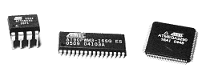

| AVR Libc Home Page |  | AVR Libc Development Pages | |||
| Main Page | User Manual | Library Reference | FAQ | Alphabetical Index | Example Projects |
The results below can only give a rough estimate of the resources necessary for using certain library functions. There is a number of factors which can both increase or reduce the effort required:
Avr-gcc version is 4.7.1
The size of function is given in view of all picked up functions. By default Avr-libc is compiled with -mcall-prologues option. In brackets the size without taking into account modules of a prologue and an epilogue is resulted. Both of the size can coincide, if function does not cause a prologue/epilogue.
Function | Units | Avr2 | Avr25 | Avr4 |
atoi ("12345") | Flash bytes | 82 (82) | 78 (78) | 74 (74) |
atol ("12345") | Flash bytes | 122 (122) | 118 (118) | 118 (118) |
dtostre (1.2345, s, 6, 0) | Flash bytes | 1116 (1004) | 1048 (938) | 1048 (938) |
dtostrf (1.2345, 15, 6, s) | Flash bytes | 1616 (1616) | 1508 (1508) | 1508 (1508) |
itoa (12345, s, 10) | Flash bytes | 110 (110) | 102 (102) | 102 (102) |
ltoa (12345L, s, 10) | Flash bytes | 134 (134) | 126 (126) | 126 (126) |
malloc (1) | Flash bytes | 768 (712) | 714 (660) | 714 (660) |
realloc ((void *)0, 1) | Flash bytes | 1284 (1172) | 1174 (1064) | 1174 (1064) |
qsort (s, sizeof(s), 1, cmp) | Flash bytes | 1252 (1140) | 1022 (912) | 1028 (918) |
sprintf_min (s, "%d", 12345) | Flash bytes | 1224 (1112) | 1092 (982) | 1088 (978) |
sprintf (s, "%d", 12345) | Flash bytes | 1614 (1502) | 1476 (1366) | 1454 (1344) |
sprintf_flt (s, "%e", 1.2345) | Flash bytes | 3228 (3116) | 2990 (2880) | 2968 (2858) |
sscanf_min ("12345", "%d", &i) | Flash bytes | 1532 (1420) | 1328 (1218) | 1328 (1218) |
sscanf ("12345", "%d", &i) | Flash bytes | 2008 (1896) | 1748 (1638) | 1748 (1638) |
sscanf ("point,color", "%[a-z]", s) | Flash bytes | 2008 (1896) | 1748 (1638) | 1748 (1638) |
sscanf_flt ("1.2345", "%e", &x) | Flash bytes | 3464 (3352) | 3086 (2976) | 3070 (2960) |
strtod ("1.2345", &p) | Flash bytes | 1632 (1520) | 1536 (1426) | 1480 (1480) |
strtol ("12345", &p, 0) | Flash bytes | 918 (806) | 834 (724) | 792 (792) |
The table contains the number of MCU clocks to calculate a function with a given argument(s). The main reason of a big difference between Avr2 and Avr4 is a hardware multiplication.
Function | Avr2 | Avr4 |
__addsf3 (1.234, 5.678) | 113 | 108 |
__mulsf3 (1.234, 5.678) | 375 | 138 |
__divsf3 (1.234, 5.678) | 466 | 465 |
acos (0.54321) | 4411 | 2455 |
asin (0.54321) | 4517 | 2556 |
atan (0.54321) | 4710 | 2271 |
atan2 (1.234, 5.678) | 5270 | 2857 |
cbrt (1.2345) | 2684 | 2555 |
ceil (1.2345) | 177 | 177 |
cos (1.2345) | 3387 | 1671 |
cosh (1.2345) | 4922 | 2979 |
exp (1.2345) | 4708 | 2765 |
fdim (5.678, 1.234) | 111 | 111 |
floor (1.2345) | 180 | 180 |
fmax (1.234, 5.678) | 39 | 37 |
fmin (1.234, 5.678) | 35 | 35 |
fmod (5.678, 1.234) | 131 | 131 |
frexp (1.2345, 0) | 42 | 41 |
hypot (1.234, 5.678) | 1341 | 866 |
ldexp (1.2345, 6) | 42 | 42 |
log (1.2345) | 4142 | 2134 |
log10 (1.2345) | 4498 | 2260 |
modf (1.2345, 0) | 433 | 429 |
pow (1.234, 5.678) | 9293 | 5047 |
round (1.2345) | 150 | 150 |
sin (1.2345) | 3353 | 1653 |
sinh (1.2345) | 4946 | 3003 |
sqrt (1.2345) | 494 | 492 |
tan (1.2345) | 4381 | 2426 |
tanh (1.2345) | 5126 | 3173 |
trunc (1.2345) | 178 | 178 |